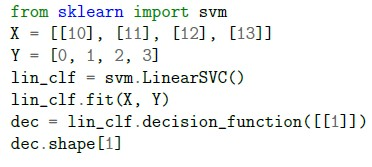

Home / MLP / Week 7 / Real questions
MLP week 7 - real exam questions
9 questions pulled from past papers whose wording matches this week's topics, newest first, duplicates removed. Pick your answers, then press Check answers. Figures and answer keys are the originals.
Elapsed 00:00
Which of the following implementations of LogisticRgression cannot be used to tackle multinomial multiclass problems?


Given below a y_train list which consists of coffee order's preference by the customers in a cafe.
 MultiLabelBinarizer from sklearn library has been used to convert the y_train into numbers, so which of the following option matches with the output of the following code ?
MultiLabelBinarizer from sklearn library has been used to convert the y_train into numbers, so which of the following option matches with the output of the following code ?

MultiLabelBinarizer from sklearn library has been used to convert the y_train into numbers, so which of the following option matches with the output of the following code ?
- [[1 0 1 0],[1 0 0 1],[0 1 0 1],[0 1 1 0]]
- [[0 0],[1 0],[0 1],[1 1],[1 0],[0 0],[0 0],[0 0]]
- [[1 0 1 0 0 1 0 0],[1 0 0 1 1 0 0 0]]
- [[1 0][1 0],[1 0] [0 1],[0 1] [0 1],[0 1][1 0]]

- It decides how many features are to be considered by each of the estimators
- It signifies the influence of each estimator towards the prediction
- It offers the order in which each estimator is considered before making aprediction
- It provides weights to different classes in a multiclass classification problem
Which of the following models are inherently multiclass models?
- Perceptron
- DecisionTreeClassifier
- KNeighborClassifier
- LogisticRegression

- Trains a single Logistic Regression model for all labels.
- Combines Logistic Regression with another model.
- Trains a separate Logistic Regression model for each label.
- Applies Logistic Regression in a one-vs-rest strategy for multi-classclassification.
Select multilabel multiclass classification problems:
- There is a collection of photographs. Each photograph can have multipleanimals, e.g., cats, dogs and birds. Your model should indicate all the animals which are present.
- From appropriate weather data, your model must predict, averagetemperature and average humidity for next seven days.
- Predicting expected price of a second hand car with appropriate features.
- None of these.
Which method of classification needs more than n classifiers, where n is the number of classes?
- OneVsRestClassifier
- OneVsOneClassifier
- OutputCodeClassifier
- MultiOutputClassifier
Consider an image classification task: an image can have dogs, birds and trees. An image can have any combination of these three. The classifier is expected to report all these three for every sample. What kind of classification problem is this?
- multi-label and multiclass problem.
- multi-label and binary class problem.
- multiclass problem.
- binary class single label problem.
What is the correct output of the following block of code? [Note: LinearSVC implements “one-vs-the-rest” multi-class strategy]

What is the correct output of the following block of code? [Note: LinearSVC implements “one-vs-the-rest” multi-class strategy]